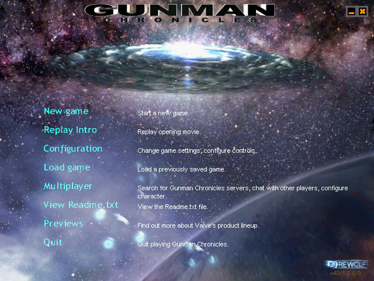
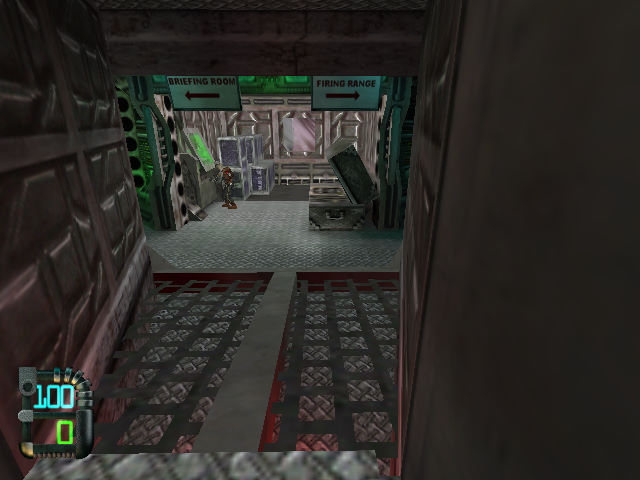
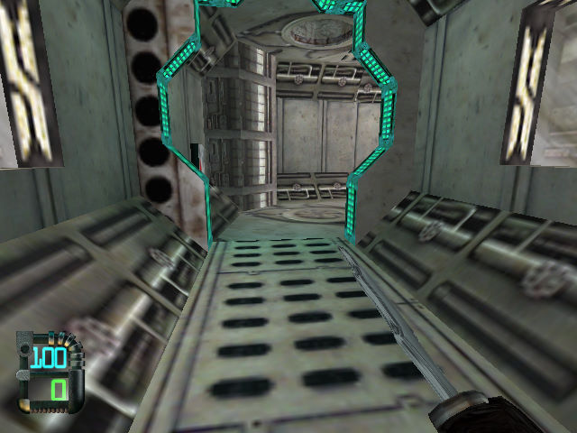

名稱：戰慄殺手／槍手編年史 (Gunman Chronicles，英文版)
簡介：Rewolf 2000年出品的第一人稱射擊遊戲，由Sierra代理發行，台灣由華彩代理進口，
但並未中文化。本遊戲原本為「戰慄時空」的玩家自製模組，後來才發展成為獨立的
遊戲 [待補]。



保護：光碟SecuROM 4.16（CD Key：3958-50039-1266）
備註：VirtualBox若顯示不正常，可到[Configuration]-[Video]-[Video modes]，將模式改
成OpenGL。
檔案：nocd.rar = 免光碟檔